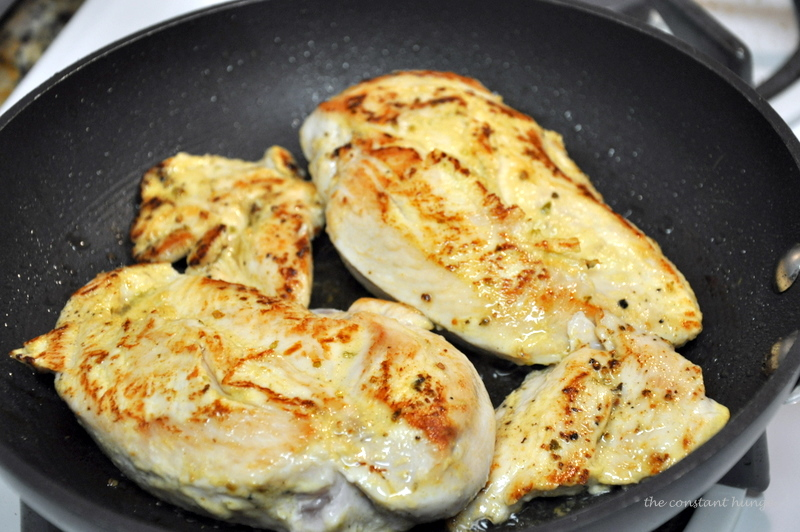

Step 1: Spray a large pan or skillet with cooking spray. Season both sides of chicken breasts with Italian seasoning and cook over medium-high heat 4-6 minutes on each side until juices run clear and completely cooked through. Transfer chicken to a plate and slice into strips or cut into bite size pieces.
